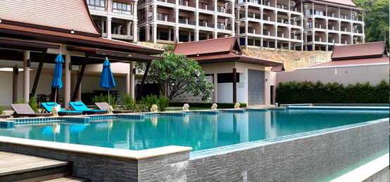
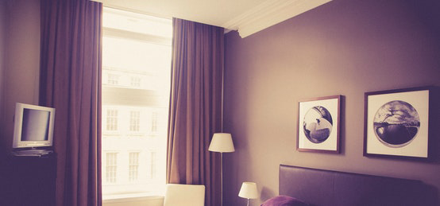

Vanglo House By LWPAC in Canada

Royal Blossom Hotel & Spa in USA

Sunset Shack Hotel in Spain

Glorious Expanse Hotel in France
our most popular clients


Prophecy Hotel & Spa in Emirate
Amazing Gabion Ideas for Outdoors A Gabion is a cage box or cylinder filled with rocks, concrete, or sometimes sand and soil and It is a great way to decorate your outdoor. Amazing Gabion Ideas for Outdoors A Gabion is a cage box or cylinder filled with rocks, concrete, or sometimes sand and soil and It is a great way to decorate your outdoor
Nebula Hotel in Spain

Western Pyramid Resort in Egypt
Amazing Gabion Ideas for Outdoors A Gabion is a cage box or cylinder filled with rocks, concrete, or sometimes sand and soil and It is a great way to decorate your outdoor. Amazing Gabion Ideas for Outdoors A Gabion is a cage box or cylinder filled with rocks, concrete, or sometimes sand and soil and It is a great way to decorate your outdoorGrand Meadows Resort in Maldives
Amazing Gabion Ideas for Outdoors A Gabion is a cage box or cylinder filled with rocks, concrete, or sometimes sand and soil and It is a great way to decorate your outdoor. Amazing Gabion Ideas for Outdoors A Gabion is a cage box or cylinder filled with rocks, concrete, or sometimes sand and soil and It is a great way to decorate your outdoor

Wanderlust Resort in Tenerife
Amazing Gabion Ideas for Outdoors A Gabion is a cage box or cylinder filled with rocks, concrete, or sometimes sand and soil and It is a great way to decorate your outdoor. Amazing Gabion Ideas for Outdoors A Gabion is a cage box or cylinder filled with rocks, concrete, or sometimes sand and soil and It is a great way to decorate your outdoor

Twin Sanctuary Hotel in Great Britain
Amazing Gabion Ideas for Outdoors A Gabion is a cage box or cylinder filled with rocks, concrete, or sometimes sand and soil and It is a great way to decorate your outdoor. Amazing Gabion Ideas for Outdoors A Gabion is a cage box or cylinder filled with rocks, concrete, or sometimes sand and soil and It is a great way to decorate your outdoor
Prism Hotel in Ireland